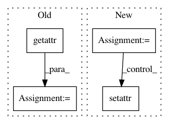

d20fc092d6454011da6c306975e740a5875f97e7,eval.py,,,#,22
Before Change
if len(opt.input_fc_dir) == 0:
opt.input_fc_dir = infos["opt"].input_fc_dir
opt.input_att_dir = infos["opt"].input_att_dir
opt.input_box_dir = getattr(infos["opt"], "input_box_dir", "")
opt.input_label_h5 = infos["opt"].input_label_h5
if len(opt.input_json) == 0:
opt.input_json = infos["opt"].input_json
if opt.batch_size == 0:
After Change
infos = utils.pickle_load(f)
// override and collect parameters
replace = ["input_fc_dir", "input_att_dir", "input_box_dir", "input_label_h5", "input_json", "batch_size", "id"]
ignore = ["start_from"]
for k in vars(infos["opt"]).keys():
if k in replace:
setattr(opt, k, getattr(opt, k) or getattr(infos["opt"], k))
elif k not in ignore:
if not k in vars(opt):
vars(opt).update({k: vars(infos["opt"])[k]}) // copy over options from model
In pattern: SUPERPATTERN
Frequency: 4
Non-data size: 4
Instances
Project Name: ruotianluo/ImageCaptioning.pytorch
Commit Name: d20fc092d6454011da6c306975e740a5875f97e7
Time: 2019-04-18
Author: rluo@ttic.edu
File Name: eval.py
Class Name:
Method Name:
Project Name: NVIDIA/sentiment-discovery
Commit Name: 5e37bb3ea1bed3f329ff825eaa6c7b9ed92edb15
Time: 2017-12-20
Author: raulp@gcf-ctrl-01.nvidia.com
File Name: sentiment_discovery/reparameterization/reparameterization.py
Class Name: Reparameterization
Method Name: backward_hook
Project Name: NVIDIA/sentiment-discovery
Commit Name: 5e37bb3ea1bed3f329ff825eaa6c7b9ed92edb15
Time: 2017-12-20
Author: raulp@gcf-ctrl-01.nvidia.com
File Name: sentiment_discovery/reparameterization/reparameterization.py
Class Name: Reparameterization
Method Name: __call__